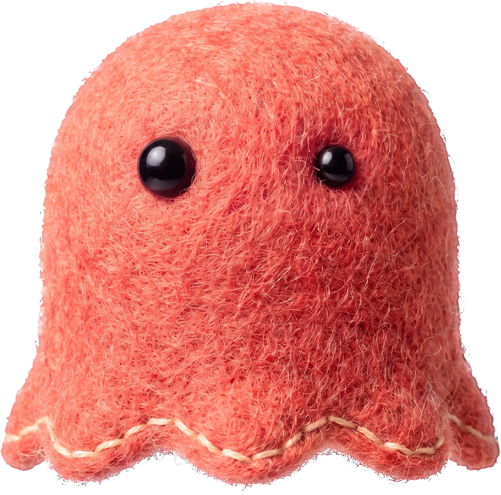

NOTICE식당 안내
주문은 계산대에서 해 주세요. 식사 후 그릇은 반납대에 놓아 주세요.
읽기 연습 · 한 문제씩 천천히

먼저 이 연습부터
답한 내용과 아직 확인하지 못한 부분을 살펴 연습을 골랐어요.
이런 글을 읽어요
답한 내용을 보고 다음 연습을 골라요. 지금은 읽기만 확인해요. 듣기·말하기 실력이나 TOPIK 합격 여부를 판단하는 시험은 아니에요.
주문은 계산대에서 해 주세요. 식사 후 그릇은 반납대에 놓아 주세요.
주문 장소와 그릇 반납 장소가 달라요.
같은 답을 외운 것과 새 글을 혼자 읽은 것은 따로 살펴요.
다음으로 해 볼 연습 · 글 속 정보 찾기